Справочник пациентов и создание медкарты
Документ описывает основные сценарии и ошибки прототипа «Справочник пациентов». Каждый сценарий можно повторить в прототипе: выполните предусловия, пройдите шаги и сравните результат со скриншотом.
Перед началом
- Откройте прототип. По умолчанию роль «Администратор»: фильтры Москва · Мичуринский, список построен.
- В хедере слева логотип клиники: по клику он возвращает в справочник. Справа меню приложений, уведомления и профиль пользователя.
- Слева внизу кнопка «Демо-настройки»: роль, симуляция ошибок и тестовые сценарии создания (видны на экране создания пациента).
- Данные в прототипе тестовые. Чтобы вернуться в исходное состояние, обновите страницу.
Основные сценарии
С-01 Просмотр списка пациентов С-02 Формирование списка по фильтрам С-03 Поиск пациента С-04 Просмотр данных пациента С-05 Создание медкарты существующему пациенту С-06 Создание нового пациента С-07 Найдены похожие пациенты С-08 Выбор существующего пациента С-09 Полное совпадение С-10 Совпали документы С-11 Данные изменились после проверки С-12 Документ, удостоверяющий личность С-13 Отметка «Договор не подписан» С-14 Полная форма пациента С-15 Ссылка на пациентаОсновные сценарии
Просмотр списка пациентов
Предусловия: роль «Администратор».
Шаги
- Откройте прототип.
- Прокрутите таблицу вниз.
Ожидаемый результат
- В фильтрах выбраны Москва и Мичуринский, список построен.
- Над таблицей поиск, кнопка «Добавить пациента» и счетчик «Пациенты (N)».
- Колонки: ФИО, Дата рождения, Телефон, Медкарты.
- Медкарта всегда указана как «Город · Организация (№ N)», даже если в фильтрах выбрана одна организация. Номер карты серый, название — основным цветом.
- При прокрутке список подгружается порциями по 40 («Загружаем еще…»).
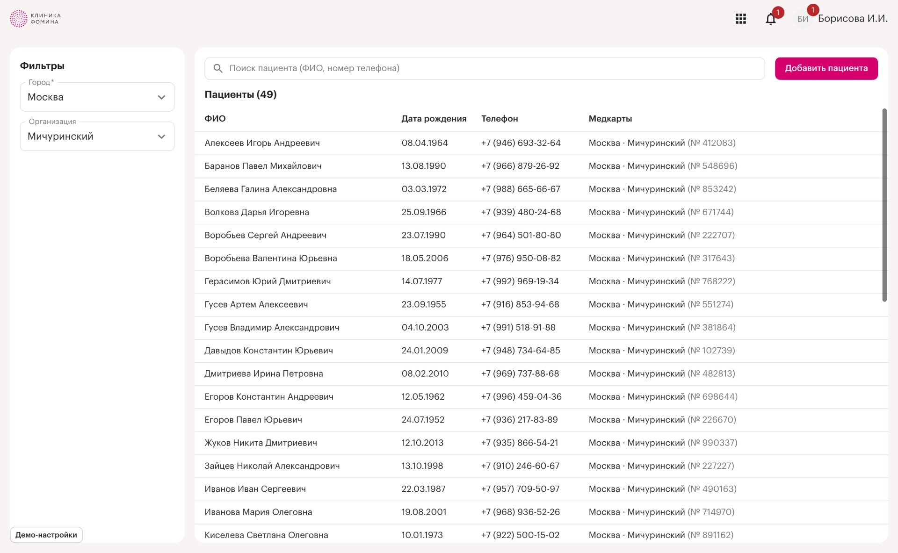
Формирование списка по фильтрам
Предусловия: в «Демо-настройках» роль «Руководитель».
Шаги
- Убедитесь, что фильтры пустые, а справа заглушка «Список пациентов не сформирован».
- Выберите город «Москва».
- Нажмите «Сформировать».
- Выберите организацию и снова нажмите «Сформировать».
- Нажмите «Сбросить фильтры».
Ожидаемый результат
- Пока город не выбран, поле «Организация» неактивно, список не строится.
- Кнопка «Сформировать» появляется только после изменения фильтров и исчезает после построения списка.
- Формат медкарт не зависит от фильтров: «Город · Организация (№ N)». Без организации видны карты во всех доступных организациях города, с организацией — только в выбранной.
- «Сбросить фильтры» видна, когда фильтры отличаются от исходных, и возвращает их.
- Для роли «Филиал» (Белгород, одна клиника) поля «Организация» нет.
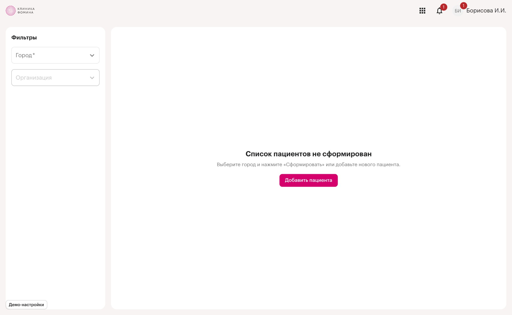
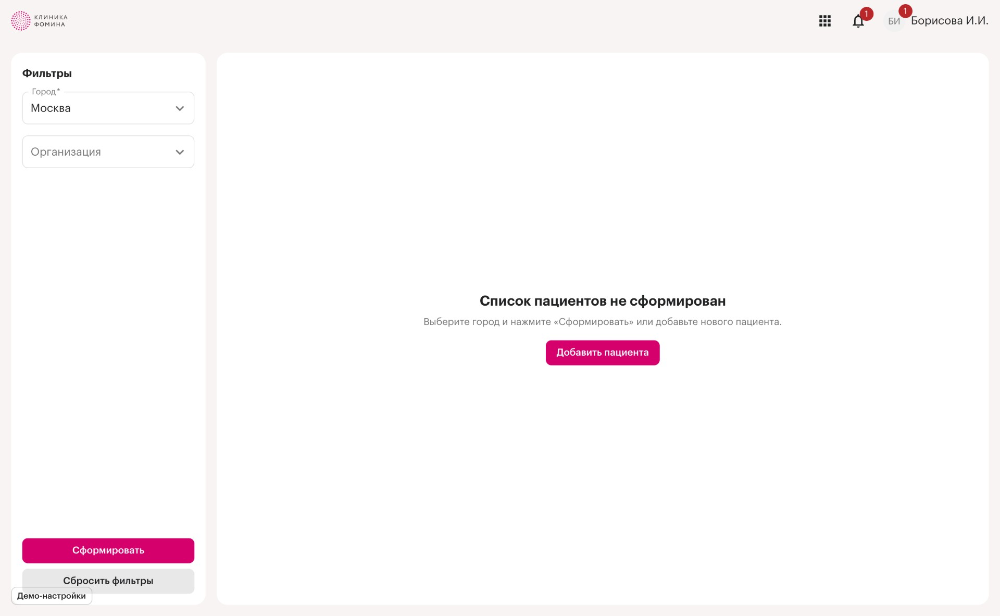
Поиск пациента
Предусловия: роль «Администратор», список построен.
Шаги
- Введите в поиск «Тестов».
- Дождитесь результатов.
- Нажмите крестик в поле поиска.
Ожидаемый результат
- Во время поиска справа подпись «Ищем в текущем списке и в сети клиник…».
- Найденные в текущем списке показаны в основной таблице, счетчик «Пациенты (N)» показывает их число.
- Ниже блок «Найдены в сети клиник (N)»: пациенты без медкарты в выбранной области. Медкарты указаны как «Город · Организация (№ N)», в строке кнопка «Создать медкарту».
- Если карт больше двух, видна ссылка «Еще N карт», она открывает правую панель.
- После очистки поиска возвращается полный список.
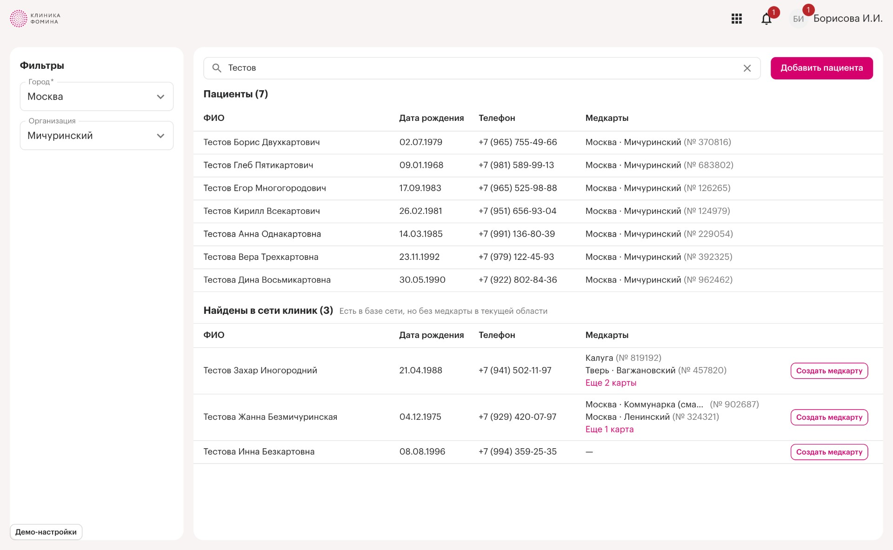
Просмотр данных пациента
Предусловия: список построен.
Шаги
- Нажмите на строку пациента.
- Нажмите на строку другого пациента.
- Нажмите на ту же строку еще раз. Повторите с клавишей Esc и с крестиком.
- Найдите пациента из блока «Найдены в сети клиник» и откройте его.
Ожидаемый результат
- Справа открывается панель: ФИО, дата рождения и возраст, контактные данные, общая информация, документы, «Медицинские карты (N)». Пустые поля — прочерк.
- В разделе «Документы» подзаголовок — вид документа пациента («Паспорт», «Водительское удостоверение»), под ним серия, номер, дата выдачи, код подразделения, «Кем выдан» и «Запись о паспортных данных действует с».
- Медкарта в панели: «Город · Организация (№ N)», справа флаг «Договор не подписан» (см. С-13).
- Внизу панели кнопка «Перейти к полной форме» (см. С-14).
- Выбранная строка подсвечена. Клик по другому пациенту меняет данные в открытой панели.
- Панель закрывается повторным кликом по строке, клавишей Esc или крестиком.
- У пациента из сети вверху желтый алерт «Нет медкарты в выбранной области».
- Кнопка «Создать медкарту» неактивна, если у пациента карты во всех доступных организациях.
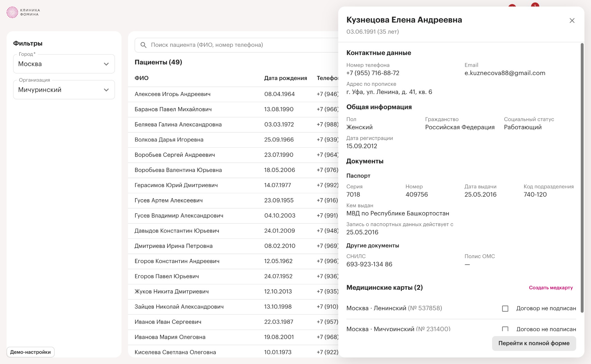
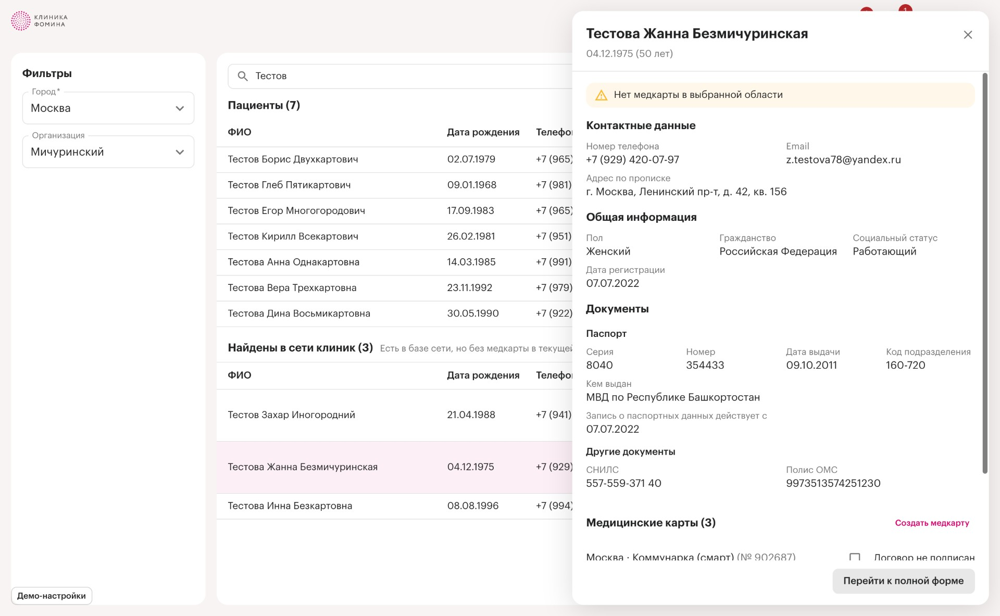
Создание медкарты существующему пациенту
Предусловия: в фильтрах выбрана только Москва, открыта панель пациента со свободными организациями.
Шаги
- В панели нажмите «Создать медкарту».
- Откройте список «Организация».
- Выберите свободную организацию и нажмите «Создать медкарту».
Ожидаемый результат
- Открывается модалка «Создание медкарты»: «Пациент: ФИО», город подставлен из фильтров.
- Организации, где у пациента уже есть карта, неактивны: «Мичуринский (медкарта № …)», при наведении подсказка.
- Кнопка «Создать медкарту» активна, когда выбраны город и свободная организация. Во время создания — спиннер.
- После создания — сообщение «Медкарта № N создана · Организация», карта появляется в панели.
- Если все организации города заняты — желтый алерт «У пациента уже есть медкарта в этом городе».
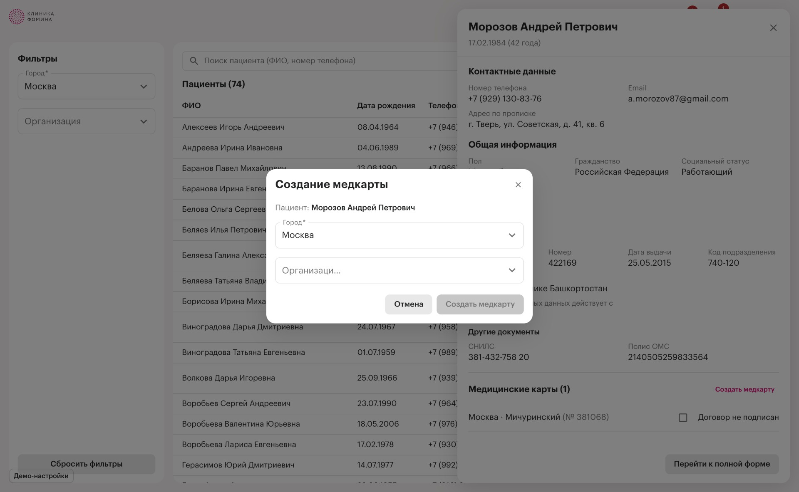
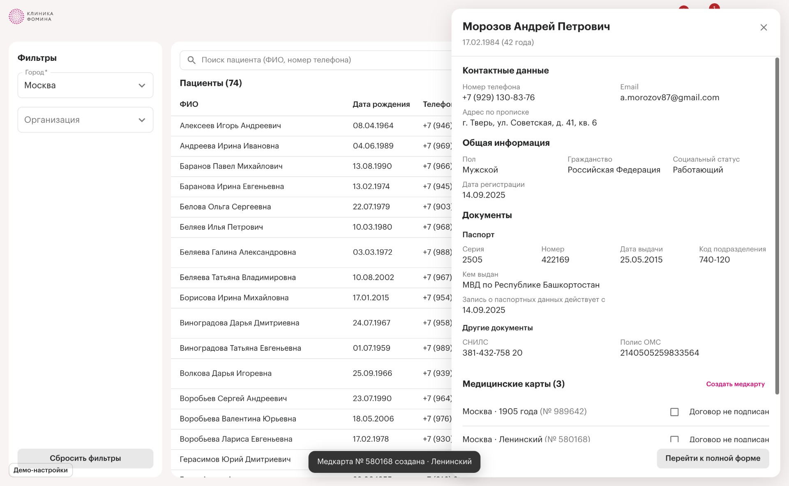
Создание нового пациента
Предусловия: список построен.
Шаги
- Нажмите «Добавить пациента».
- В «Демо-настройках» нажмите «Не найден» (или заполните поля вручную).
- Нажмите «Продолжить».
- На шаге 2 выберите пол и нажмите «Создать пациента».
- В модалке нажмите «Не сейчас» или «Создать медкарту».
Ожидаемый результат
- Над формой хлебные крошки «Справочник пациентов › Создание пациента».
- Шаг 1 — «Основные данные»: Фамилия*, Имя*, Отчество, Дата рождения*, Номер телефона*, Email.
- По «Продолжить» идет проверка на дубли. Совпадений нет — открывается шаг 2.
- На шаге 2 сверху сводка шага 1 и ссылка «Изменить». Степпер: шаг 1 с галочкой, линия акцентная.
- В разделе «Документы» — поле «Документ, удостоверяющий личность» (по умолчанию «Паспорт») и поля документа (см. С-12).
- Внизу кнопки «Отмена» и «Создать пациента». Вернуться на шаг 1 можно через степпер или «Изменить».
- «Создать пациента» неактивна, пока не выбран пол.
- После создания открывается справочник с панелью нового пациента и модалка «Создать медкарту?».
- «Не сейчас» — сообщение «Пациент сохранен без медкарты». «Создать медкарту» — модалка из С-05.
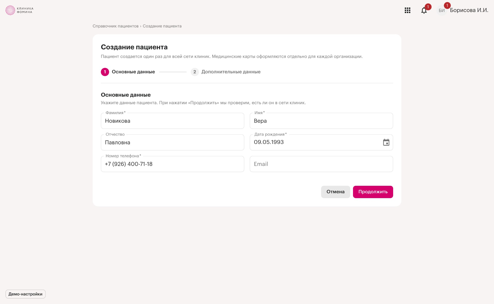
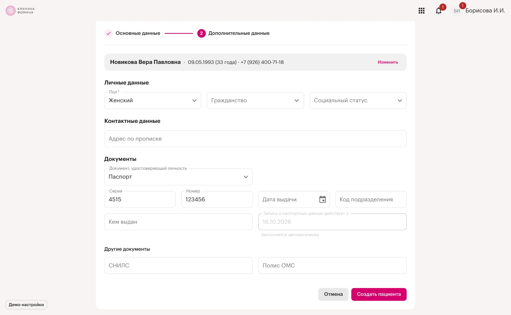
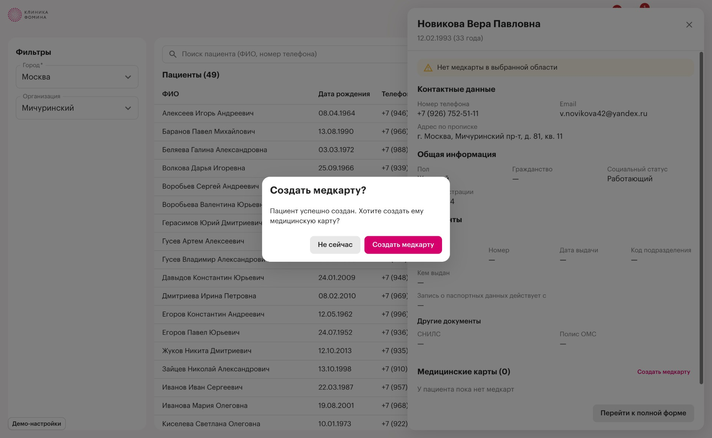
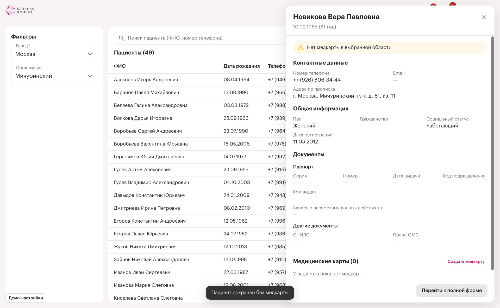
Найдены похожие пациенты
Предусловия: открыт экран создания пациента.
Шаги
- В «Демо-настройках» нажмите «Один похожий» (или «Несколько похожих»).
- Нажмите «Продолжить».
- Нажмите на карточку пациента в списке.
- Нажмите «Продолжить» еще раз.
Ожидаемый результат
- Желтый алерт «Найдены похожие пациенты» и список карточек.
- В карточке: ФИО · дата рождения · телефон и строка «Совпадения: …» с совпавшими полями.
- Клик по карточке открывает правую панель с кнопками «Перейти к полной форме» и «Выбрать пациента».
- Повторное «Продолжить» с теми же данными переводит на шаг 2 — создание не блокируется.
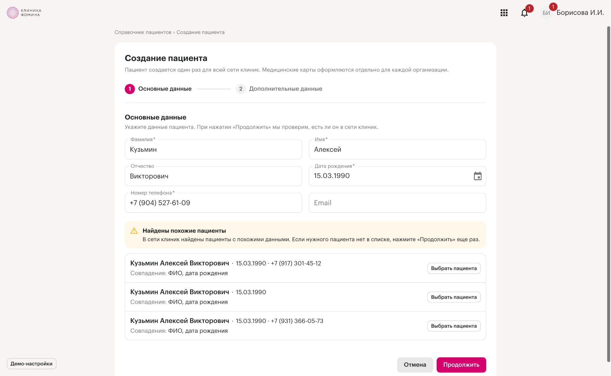
Выбор существующего пациента
Предусловия: выполнены шаги 1–2 сценария С-07 или С-09.
Шаги
- В карточке найденного пациента нажмите «Выбрать пациента».
Ожидаемый результат
- Создание нового пациента отменяется, форма очищается.
- Открывается справочник с панелью выбранного пациента.
- Сообщение «Открыт существующий пациент. Новый пациент не создан».
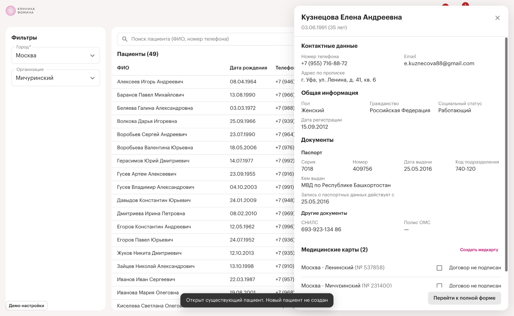
Полное совпадение
Предусловия: открыт экран создания пациента.
Шаги
- В «Демо-настройках» нажмите «Полное совпадение».
- Нажмите «Продолжить».
Ожидаемый результат
- Красный алерт «Пациент уже есть в системе», текст «Создать нового пациента нельзя. Выберите пациента из списка или проверьте введенные данные».
- Совпали ФИО, дата рождения и телефон — в карточке «Совпадения: ФИО, дата рождения, телефон».
- Кнопка «Продолжить» неактивна. «Выбрать пациента» — акцентная.
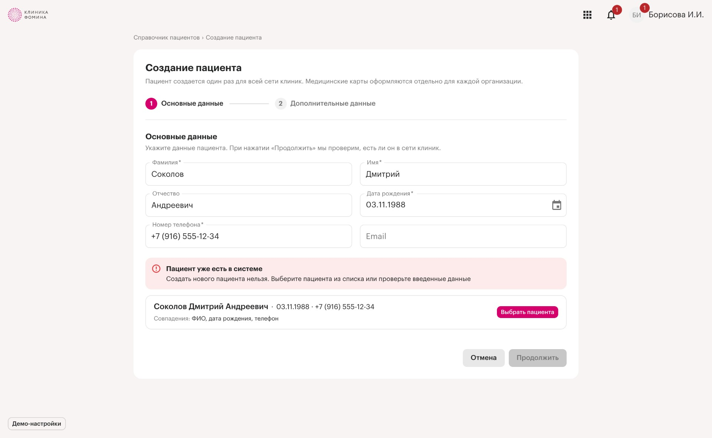
Совпали документы
Предусловия: открыт экран создания пациента. Пример: пациентка сменила фамилию.
Шаги
- В «Демо-настройках» нажмите «Совпали документы».
- Нажмите «Продолжить».
- На шаге 2 нажмите «Создать пациента».
Ожидаемый результат
- На шаге 1 совпадений нет — сразу открывается шаг 2.
- После «Создать пациента» — красный алерт «Пациент уже есть в системе» и карточка с совпадениями «имя, отчество, дата рождения, паспорт».
- Создание заблокировано, кнопка «Создать пациента» неактивна.
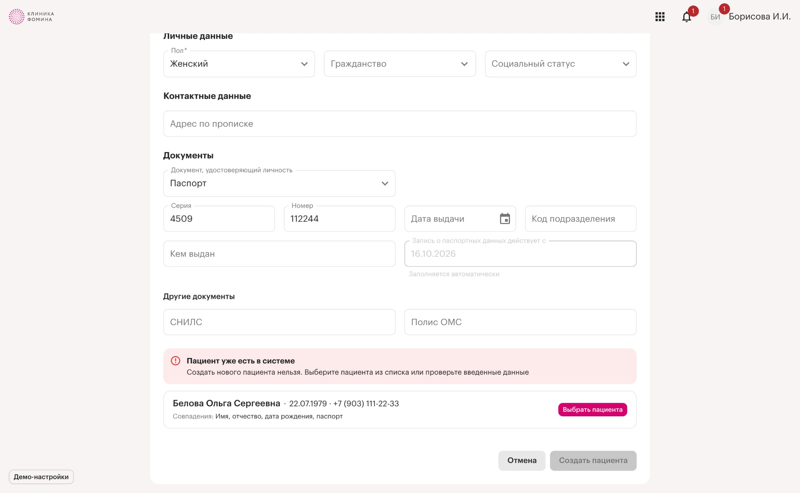
Данные изменились после проверки
Предусловия: выполнены шаги 1–2 сценария С-07.
Шаги
- Измените ФИО, дату рождения или телефон.
Ожидаемый результат
- Алерт и список найденных пациентов скрываются. Дополнительных сообщений нет.
- Кнопка «Продолжить» активна, в том числе если до изменения был красный алерт «Пациент уже есть в системе».
- По нажатию «Продолжить» проверка выполняется заново с новыми данными.
- На шаге 2 так же: после изменения данных алерт пропадает, «Создать пациента» снова проверяет пациента.
Документ, удостоверяющий личность
Предусловия: открыт шаг 2 создания пациента (например, «Не найден» → «Продолжить»).
Шаги
- В поле «Документ, удостоверяющий личность» выберите «Водительское удостоверение».
- Заполните серию и номер.
- Выберите пол и нажмите «Создать пациента», затем «Не сейчас».
Ожидаемый результат
- Варианты в демо: «Паспорт» (по умолчанию) и «Водительское удостоверение». В продукте список больше.
- Набор полей одинаковый для любого вида документа: серия, номер, дата выдачи, код подразделения, «Кем выдан».
- Поле «Запись о паспортных данных действует с» недоступно для ввода. Когда введены серия или номер, в нем автоматически появляется дата ввода данных, подсказка «Заполняется автоматически».
- В панели пациента подзаголовок раздела документа — выбранный вид («Водительское удостоверение»), поле «Запись о паспортных данных действует с» показано в этом разделе.
- При проверке дублей документ совпадает, только если совпадают вид, серия и номер.
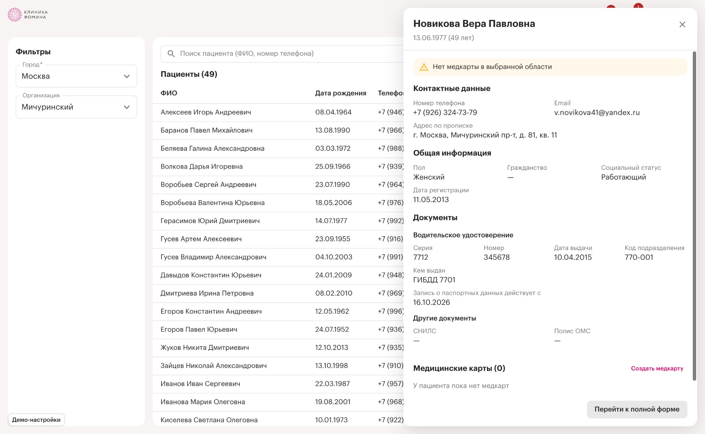
Отметка «Договор не подписан»
Предусловия: открыта панель пациента, у которого есть медкарты.
Шаги
- В разделе «Медицинские карты» поставьте флаг «Договор не подписан» у одной из карт.
- Снимите флаг.
Ожидаемый результат
- Флаг есть у каждой медкарты, справа в строке «Город · Организация (№ N)».
- По умолчанию флаг снят — договор считается подписанным.
- Флаг относится к конкретной медкарте и не влияет на другие карты пациента.
- В прототипе отметка сохраняется до перезагрузки страницы.
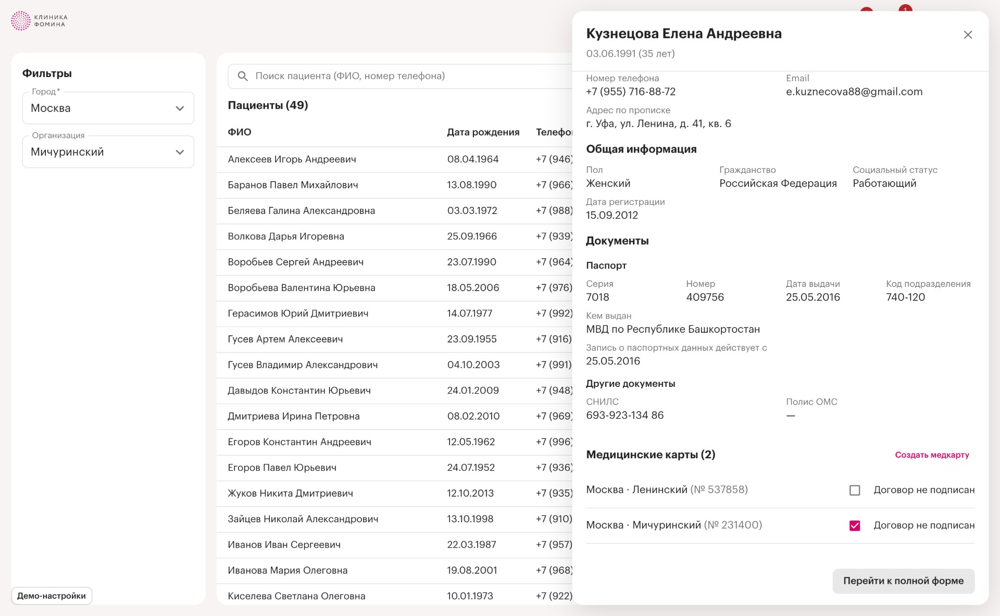
Полная форма пациента
Предусловия: открыта панель пациента (С-04) или панель найденного пациента на экране создания (С-07).
Шаги
- В панели нажмите «Перейти к полной форме».
- Переключите вкладки.
- Нажмите «Закрыть». Повторите с кнопкой «Назад» в браузере.
- Откройте полную форму из панели на экране создания пациента и нажмите «Выбрать пациента».
Ожидаемый результат
- Полная форма открывается отдельной страницей со своей ссылкой
#/patients/<id>. Панель уезжает вправо, форма появляется с легким сдвигом справа налево. - Карточка шириной 960 px по центру экрана. Сверху хлебные крошки, ФИО, дата рождения и возраст.
- Вкладки: Общая информация (открыта по умолчанию), Медкарты, Договоры, Депозиты, Родственники, Документы.
- «Общая информация»: поля в сетке из 4 колонок. Если поле в строке одно («Адрес по прописке», «Кем выдан», «Запись о паспортных данных действует с»), оно занимает всю ширину.
- «Медкарты»: список «Город · Организация (№ N)» с флагом «Договор не подписан» (см. С-13) и кнопка «Создать медкарту».
- Хлебные крошки зависят от того, откуда открыта форма: из справочника — «Справочник пациентов › ФИО», из создания пациента — «Справочник пациентов › Создание пациента › ФИО». Последняя крошка — текущая страница, не кликается.
- Внизу вторичная кнопка «Закрыть»: возвращает туда, откуда открыли форму, панель пациента снова открыта. Заполненная форма создания сохраняется. «Назад» в браузере работает так же.
- Если форма открыта из создания пациента, справа от «Закрыть» акцентная кнопка «Выбрать пациента» — результат как в С-08.
- Клик по «Справочник пациентов» в крошках из сценария создания при заполненной форме открывает модалку «Выйти без сохранения?» (О-08).
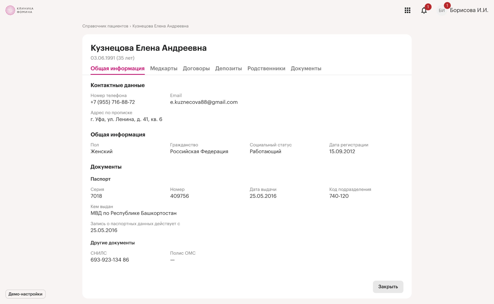
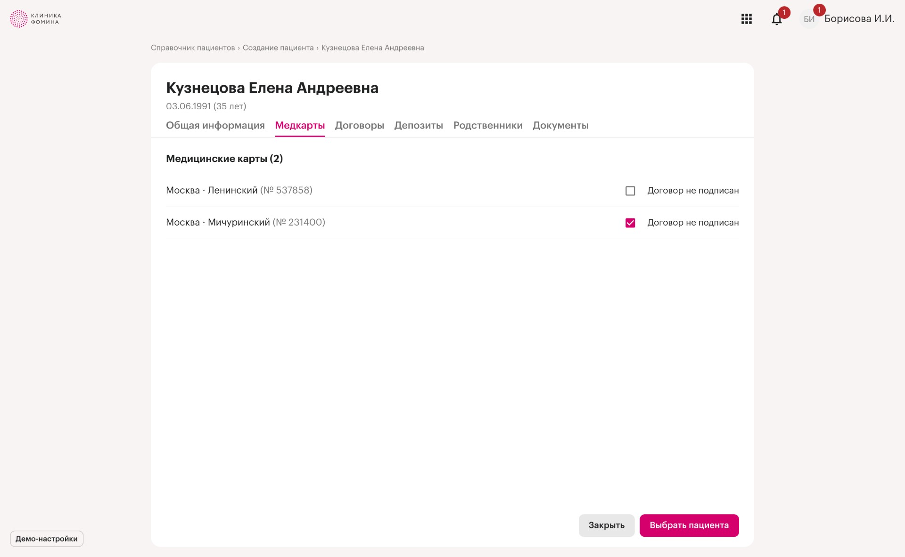
Ссылка на пациента
Предусловия: открыта полная форма пациента (С-14).
Шаги
- Скопируйте ссылку из адресной строки браузера.
- Откройте ссылку в новой вкладке (так ее откроет коллега).
- Нажмите «Закрыть».
Ожидаемый результат
- Ссылка ведет только на пациента. Контекст создания и заполненная форма в нее не попадают — они остаются только во вкладке автора.
- У получателя форма всегда открывается как из справочника: крошки «Справочник пациентов › ФИО», кнопки «Выбрать пациента» нет.
- «Закрыть» и «Назад» ведут в справочник с открытой панелью пациента.
- Данные загружаются при каждом открытии ссылки: получатель видит актуальное состояние пациента, включая изменения после отправки ссылки.
Ошибки и пограничные случаи
Ошибки заполнения формы
Предусловия: открыт экран создания пациента, поля пустые.
Шаги
- Нажмите «Продолжить».
- Введите в «Фамилию» цифры, в «Телефон» неполный номер.
Ожидаемый результат
- Обязательные поля подсвечены: «Укажите фамилию», «Укажите имя», «Укажите дату рождения», «Укажите номер телефона».
- Сообщение «Проверьте заполнение полей», проверка не запускается.
- «Только буквы, пробел и дефис», «Введите номер полностью».
- Ошибки шага 2 показываются после нажатия «Создать пациента».
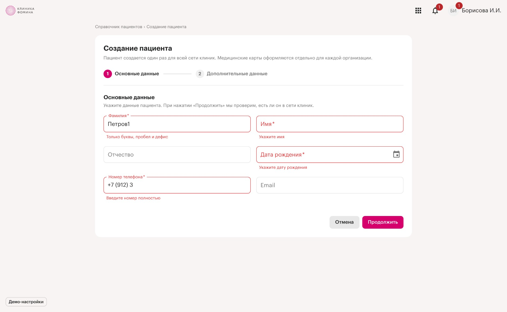
Пациент не найден
Предусловия: список построен.
Шаги
- Введите в поиск «Шершнева».
- Нажмите «Очистить поиск».
Ожидаемый результат
- Заголовок «Пациент не найден», текст «Совпадений нет ни в текущем списке, ни в сети клиник. Проверьте запрос.»
- Одна кнопка «Очистить поиск». Создать пациента можно через «Добавить пациента».
- После очистки возвращается полный список.
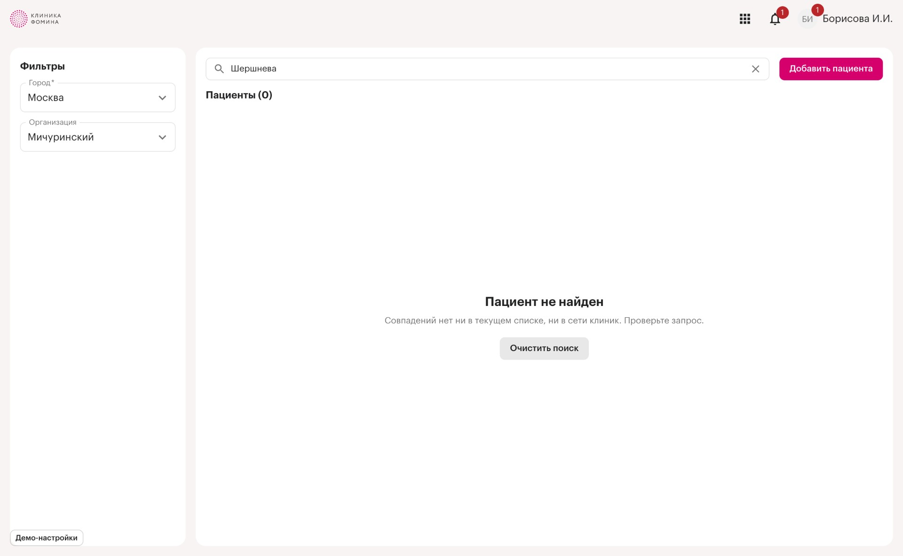
Короткий поисковый запрос
Предусловия: список построен.
Шаги
- Введите в поиск «Те» или три цифры телефона.
Ожидаемый результат
- Поиск не запускается, список не меняется.
- Справа подсказка «Для поиска введите минимум 3 буквы ФИО или 4 цифры телефона».
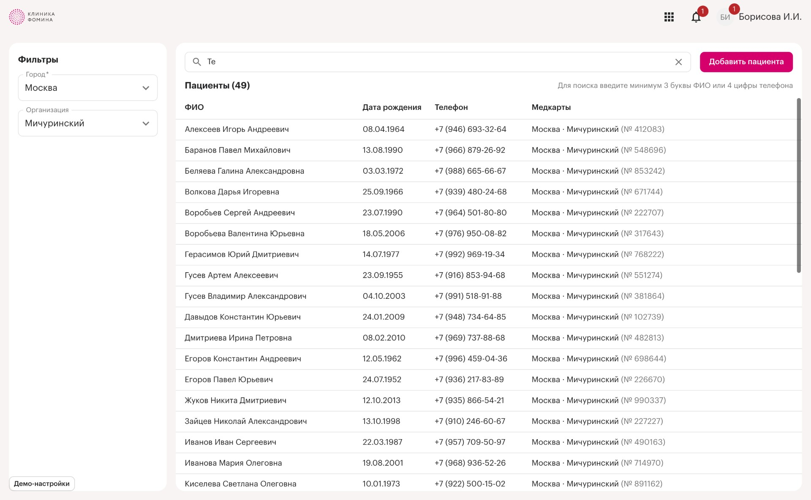
Ошибка загрузки списка
Предусловия: в «Демо-настройках» включен флажок «Ошибка загрузки списка».
Шаги
- Измените фильтры и нажмите «Сформировать».
- Выключите флажок и нажмите «Повторить».
Ожидаемый результат
- Заголовок «Не удалось загрузить список пациентов», текст «Произошла ошибка при загрузке. Повторите попытку.», кнопка «Повторить».
- После «Повторить» список загружается.
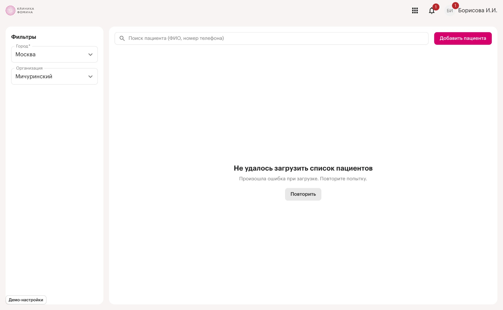
Ошибка поиска
Предусловия: в «Демо-настройках» включен флажок «Ошибка поиска».
Шаги
- Введите в поиск «Тестов».
- Выключите флажок и нажмите «Повторить».
Ожидаемый результат
- Заголовок «Не удалось выполнить поиск», текст «Произошла ошибка. Попробуйте еще раз», кнопка «Повторить».
- После «Повторить» поиск выполняется заново.
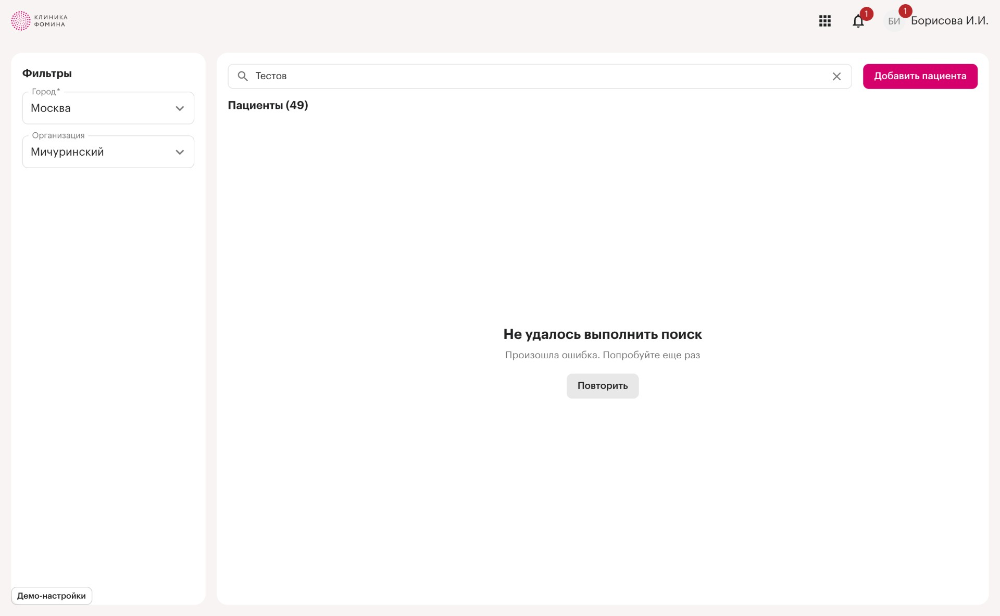
Ошибка проверки пациента
Предусловия: открыт экран создания пациента, в «Демо-настройках» включен флажок «Ошибка проверки в сети».
Шаги
- Нажмите «Один похожий».
- Нажмите «Продолжить».
- Выключите флажок и нажмите «Повторить».
Ожидаемый результат
- Модалка «Не удалось проверить пациента», текст «Проверка не выполнена из-за ошибки соединения. Повторите попытку еще раз».
- Кнопки «Отменить» и «Повторить». «Повторить» запускает проверку текущего шага заново.
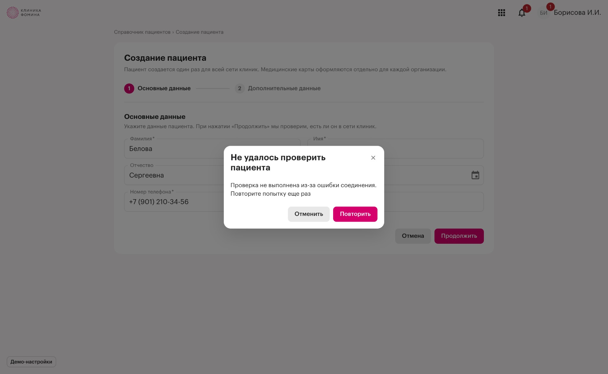
Медкарту уже создал другой сотрудник
Предусловия: в «Демо-настройках» включен флажок «Медкарту уже создал другой сотрудник».
Шаги
- Выполните шаги сценария С-05.
Ожидаемый результат
- Модалка создания закрывается, открывается модалка «Медкарта уже создана»: «Другой сотрудник создал медкарту № N в организации «…» (Город) раньше вас».
- Кнопка «Создать в другой организации» — если у пациента остались свободные организации. «Понятно» закрывает модалку.
- Созданная карта появляется в панели пациента.
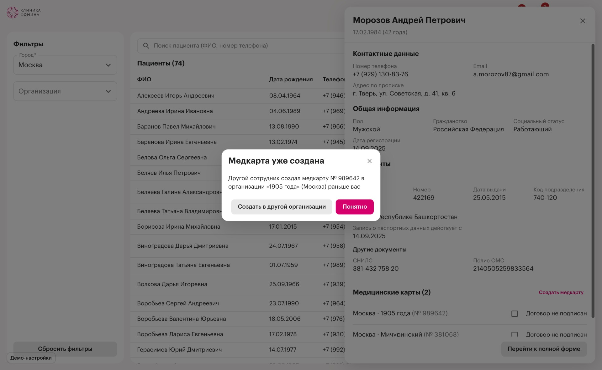
Выход без сохранения
Предусловия: открыт экран создания пациента, заполнено хотя бы одно поле.
Шаги
- Нажмите «Отмена» (есть на обоих шагах), «Справочник пациентов» в хлебных крошках (на экране создания или в полной форме, открытой из создания) или логотип в хедере.
- В модалке нажмите «Отмена», затем повторите и нажмите «Выйти».
Ожидаемый результат
- Модалка «Выйти без сохранения?», текст «Введенные данные пациента будут потеряны».
- «Отмена» оставляет на форме, «Выйти» возвращает в справочник без сохранения.
- Если форма пустая, выход происходит сразу.
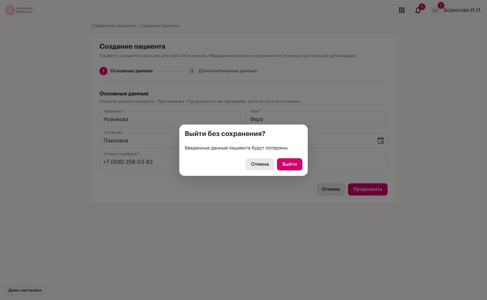